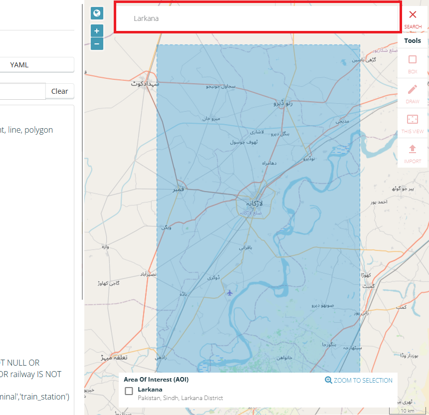

Ejercicio: Exportación de datos de OpenStreetMap#
Objetivo del ejercicio:
Este ejercicio busca mostrar dos formas de obtener OpenStreetMap (OSM) como un archivo vectorial en QGIS. Utilizaremos la herramienta de exportación HOT para descargar datos específicos de Open
Serie de ejercicios para la respuesta ante inundaciones en Larkana
Este ejercicio forma parte de la serie de ejercicios para la respuesta ante inundaciones en Larkana
Competencias abordadas en este ejercicio
Exportar datos de OSM utilizando la herramienta de exportación HOT.
Importar archivos a un proyecto de QGIS.
Ajustar de la simbología de una capa.
Duración estimada del ejercicio
El ejercicio dura cerca de 45 horas, dependiendo de la cantidad de participantes y de su familiaridad con los sistemas informáticos.
Instrucciones para capacitadores#
Rincón del instructor
Preparar la capacitación
Tómese el tiempo necesario para familiarizarse con el ejercicio y el material proporcionado.
Prepare un pizarrón. Puede ser un pizarrón físico, un rotafolio o un pizarrón digital (p. ej., un pizarrón en Miro) donde los participantes puedan añadir sus resultados y preguntas.
Antes de comenzar el ejercicio, asegúrese de que todos los participantes hayan instalado QGIS y que hayan descargado y descomprimido la carpeta de datos.
Consulte ¿Cómo realizar capacitaciones? para obtener algunos consejos generales para impartirlas.
Impartir la capacitación
Introducción:
Presente la idea y el objetivo del ejercicio.
Proporcione el enlace de descarga y asegúrese de que todos los participantes han descomprimido la carpeta antes de comenzar las tareas.
Guía paso a paso:
Muestre y explique cada paso al menos dos veces y de manera pausada para que todos puedan ver lo que está haciendo y replicarlo en su propio proyecto de QGIS.
Pregunte con regularidad si alguien necesita ayuda o si todos están siguiendo el ejercicio para asegurarse de que todos comprenden y realizan los pasos.
Mantenga una actitud abierta y paciente ante cualquier pregunta o problema que pueda surgir. Esencialmente, los participantes están realizando varias tareas a la vez, prestando atención a sus instrucciones y orientándose en su propio proyecto QGIS.
Cierre de la sesión:
Reserve tiempo para cualquier cuestión o pregunta relacionada con las tareas al final del ejercicio.
Reserve tiempo para preguntas abiertas.
Datos disponibles#
Como el ejercicio consiste en buscar datos, no habrá datos que descargar.
En su lugar, descargue la estructura de carpetas estándar aquí y guarde sus datos en la carpeta data/input a medida que los descarga.
Tareas#
OpenStreetMap (OSM) es un proyecto colaborativo de código abierto que crea mapas gratuitos y editables del mundo, desarrollado por una comunidad mundial de mapeadores. Existen varias formas de descargar o exportar datos de OpenStreetMap (OSM), cada una con sus propias ventajas. En este ejercicio, revisaremos la herramienta de exportación HOT. En la parte inferior de este ejercicio, encontrará una lista de herramientas alternativas.
Uso de la herramienta de exportación HOT#
La herramienta de exportación HOT es una herramienta para acceder a los datos de OSM ofrecida por el Equipo Humanitario de OpenStreetMap (HOT). HOT ofrece una herramienta basada en navegador para descargar datos de OSM con buenas opciones para especificar la región, el tiempo, el tipo de entidad y el formato de los datos. Para nuestro siguiente análisis, queremos exportar la red vial del distrito de Larkana, en Pakistán.
Vaya a la herramienta de exportación HOT. Necesita una cuenta de OSM para usar la herramienta. Si aún no tiene una cuenta, deberá crear una. Haga clic en
Log in. En la nueva ventana, seleccione la opción de crear una nueva cuenta.Si tiene una cuenta de OSM, puede acceder directamente a la herramienta de exportación HOT haciendo clic en
Log in.Ahora podemos empezar a crear una exportación de OSM. Para ello, haga clic
Start Exporting. Se le dirigirá a la herramienta de exportación.

En la herramienta de exportación, tiene un lienzo del mapa a la derecha y un campo de entrada a la izquierda. En el lienzo del mapa, determine la ubicación geográfica de los datos que desea exportar. En la parte izquierda se determinan los metadatos de la exportación, el formato de archivo y se selecciona qué datos se descargarán (p. ej., edificios, caminos, hospitales, asentamientos, etc.)
En el lado izquierdo, asigne un nombre a su archivo de exportación, como
Larkana Roads export 20250314, y agregue una breve descripción de lo que pretende descargar. En nuestro caso, queremos descargar la red vial de Larkana, en Pakistán. Si lo desea, puede ingresar un proyecto (p. ej., Capacitación en SIG).
En el lienzo del mapa, busque Larkana en la barra de búsqueda y seleccione el distrito. El mapa acercará el zoom para mostrar el distrito. Esto también seleccionará el distrito como nuestra área de interés. Puede verse en el polígono color azul. Nuestra exportación solo descargará los datos que se encuentren dentro de esta área.
{kind=link}

Terminamos de ajustar la exportación. Haga clic en
Next. Se abrirá una página de resumen. Haga clic enCreate Export. Comenzará su nueva exportación.

¡Ejercicio adicional!
En el siguiente ejercicio de la serie de ejercicios para la respuesta ante inundaciones en Larkana, queremos identificar los centros de salud ubicados en Larkana. ¿Se le ocurre alguna forma de exportar los centros de salud utilizando la herramienta de exportación HOT?
Disponga las capas en el mapa de forma que pueda ver la nueva capa.
(Opcional) Utilice la función de clasificación para obtener una mejor visión general:
Haga clic derecho en la capa
Larkana_Roadsen el panelLayer Panel->Properties. Se abrirá una nueva ventana con una sección de pestañas verticales a la izquierda. Navegue hasta la pestañaSymbology.En la parte superior, encontrará un menú desplegable. Despliéguelo y elija
Categorized. EnValueseleccione la carretera como “highway”.Más abajo, haga clic en
Classify. Ahora debería ver todos los valores únicos o atributos de la columna seleccionada. Puede ajustar los colores haciendo doble clic en una fila del campo central. Una vez que haya terminado, haga clic enApplyyOKpara cerrar la ventana de simbología.
Como puede ver, la herramienta de exportación HOT ofrece una buena combinación de flexibilidad y acceso rápido a los datos de OSM.
Ventajas |
Desventajas |
|---|---|
+ Buenas opciones para la selección de datos |
- Implica muchos pasos |
+ Muchos formatos de datos disponibles |
- La selección de solo tiene una opción fija |
+ Facilidad de uso |
|
+ La consulta se puede repetir fácilmente |
Herramientas alternativas#
Tip
La herramienta de exportación HOT es una buena opción para exportar datos personalizados de OSM para su uso personal. Sin embargo, en algunos casos de uso, es posible que desee elegir una herramienta diferente, como Geofabrik, QuickOSM, o incluso solo el sitio web de Intercambio de Datos Humanitarios. A continuación, encontrará una breve descripción de la herramienta y sus ventajas. Puede consultar cómo utilizar las distintas herramientas paso a paso en esta página wiki.
Geofabrik, QuickOSM, HDX
Geofabrik
El sitio web Geofabrik ofrece descargas de datos de OSM por regiones. Puede seleccionar una región de interés y descargar todos los datos de OSM dentro de esa región. Es el método más extenso. Recomendamos utilizar este método si desea explorar los datos de OSM o si necesita muchos datos de OSM. Sin embargo, si solo necesita datos específicos, como caminos, puntos de asentamientos o edificios, puede ser mejor elegir la herramienta de exportación HOT o QuickOSM.
Ventajas |
Desventajas |
|---|---|
+ Acceso rápido a conjuntos de datos de OSM completos |
- Si uno solo le interesan entidades o regiones específicas (que no sean países), no es óptimo |
+ Exportaciones de OSM muy actualizadas |
- Archivo de gran tamaño |
+ Documentación clara de qué entidades de OSM contiene cada archivo shapefile |
- Solo disponible en formato shapefile |
QuickOSM
El plugin QuickOSM le permite cargar datos de OSM desde su ventana de QGIS. Es un método rápido y fácil, pero requiere conocimientos más profundos sobre el modelo de datos de OSM en comparación con las otras opciones.
Deberá formular una consulta de datos para encontrar los datos que busca. Para adaptar su consulta en función de la clave y el valor exactos que necesita, existen dos excelentes recursos:
Wiki de OSM y, especialmente, el artículo sobre entidades del mapa.
Este método tiene la ventaja de que se pueden descargar los datos que se necesitan específicamente, pero debe saber formular las consultas. Para utilizar QuickOSM, debe instalar el plugin de QGIS.
Ventajas |
Desventajas |
|---|---|
+ La consulta se puede personalizar para datos muy específicos |
- Requiere conocimiento del modelo de datos de OSM |
+ Cargas de datos directamente en QGIS |
- Formular consultas puede volverse complejo rápidamente |
+ La consulta se puede repetir fácilmente |
Intercambio de Datos Humanitarios (exportaciones HOT)
Una forma rápida y sencilla de obtener datos específicos de OSM, como la red vial o la ubicación de centros de salud, es buscar los datos en Intercambio de Datos Humanitarios (HDX).
Aquí, el Equipo Humanitario de OpenStreetMap proporciona exportaciones de OSM para los países. La desventaja de este método es que, como las exportaciones son por países, los conjuntos de datos suelen ser bastante grandes y difíciles de manejar con QGIS.